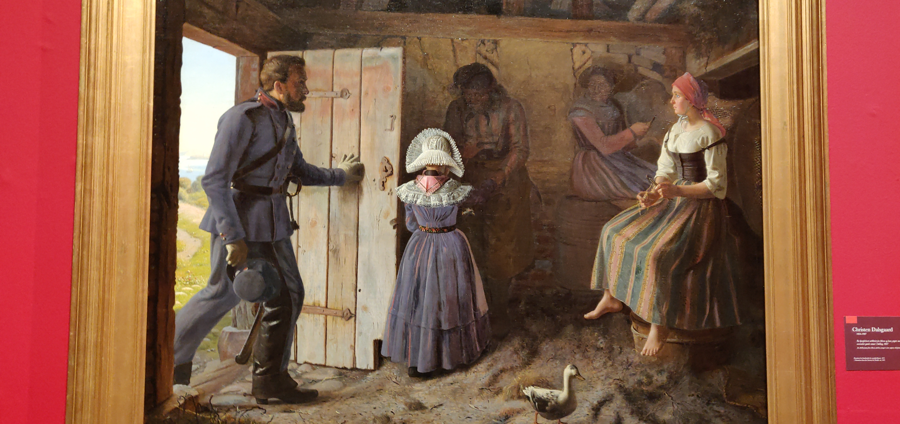
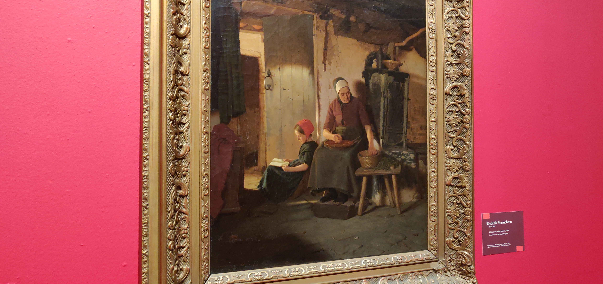

Tag et spil bordtennis, se en rødglødende jordklode, lad dig rense af et altomsluttende interaktivt vandfald. ARoS’ første særudstilling i 2019 viser, hvordan man med kunsten som facilitator og katalysator kan sætte fokus på vor tids største og mest komplekse udfordringer. Udstillingen tager udgangspunkt i FN’s 17 verdensmål for bæredygtig udvikling og inviterer publikum til at reflektere over morgendagen.
Tomorrow is the Question er skabt i et kuratorisk samarbejde mellem ARoS og Luise Faurschou og har været under udvikling i tre år. Luise Faurschou står bag organisationen ART 2030, som har til formål at binde kunsten sammen med verdensmålene. ART 2030 er af den internationale kunstplatform artnet blevet kaldt det mest ambitiøse kunstprojekt nogensinde.Værker fra 15 internationale samtidskunstnere medvirker i udstillingen. Værkerne har alle det til fælles, at de formår på en særlig stærk, visuel og sanselig måde at fortælle historien om, at vi befinder os i en brydningstid. De medvirkende kunstnere deler et fællesskab i deres fokus på nutidens store udfordringer i en form, der skaber eftertænksomhed om verdens tilstand, opfordrer til dialog og nytænkning og til kollektiv aktion. Tilsammen udgør kunstnerne en række individuelle stemmer, som konsekvent formår at udfordre vores virkelighedsforståelse og vanetænkning.
I forbindelse med udstillingen udgiver ARoS et katalog med bidrag fra forfattere, der på forskellig vis berører både de mørke og lyse scenarier for vores nutid og fremtid. Museumsdirektør Erlend G. Høyersten har skrevet et essay om behovet for en mental revolution, ekstern kurator Luise Faurschou introducerer udstillingen og kunstværkerne, og videnskabsforfatter Tor Nørretranders har skrevet et filosofisk og håbefuldt essay om morgendagens potentiale. Kataloget indeholder desuden to fagfællebedømte forskningstekster om henholdsvis den teknologiske udviklings mørke bagside af Nanna Bonde Thylstrup og Ulrik Ekman og om miljøet og det antropocæne landskab af Anette Vandsø.
Tomorrow is the Question er initieret og kurateret af Luise Faurschou, grundlægger og direktør hos ART 2030 og Faurschou Art Resources, i samarbejde med ARoS’ direktør Erlend G. Høyersten.